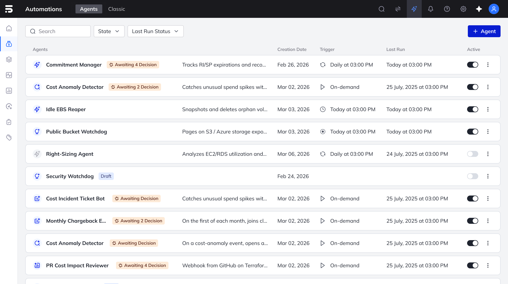
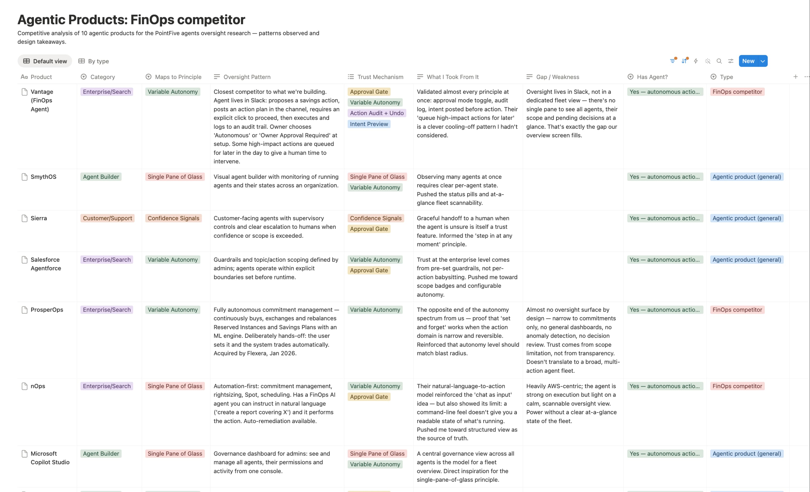
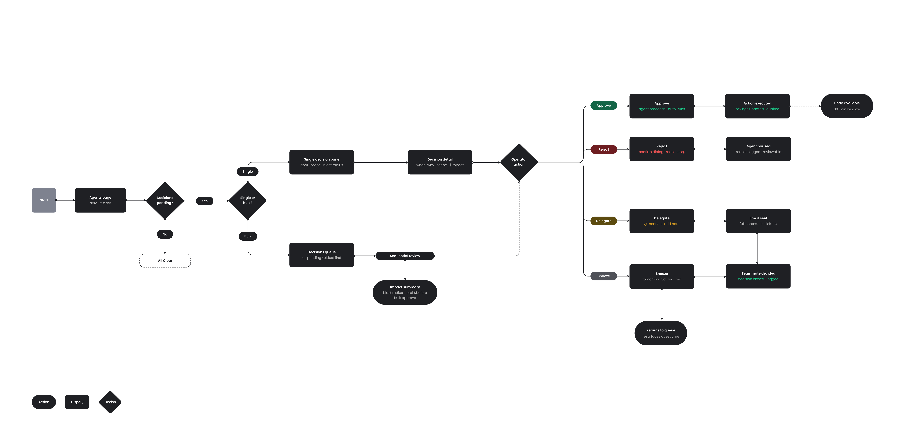
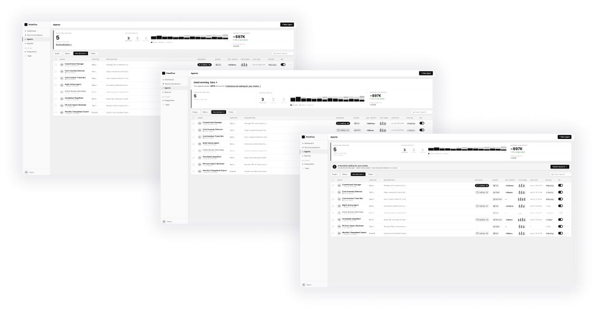
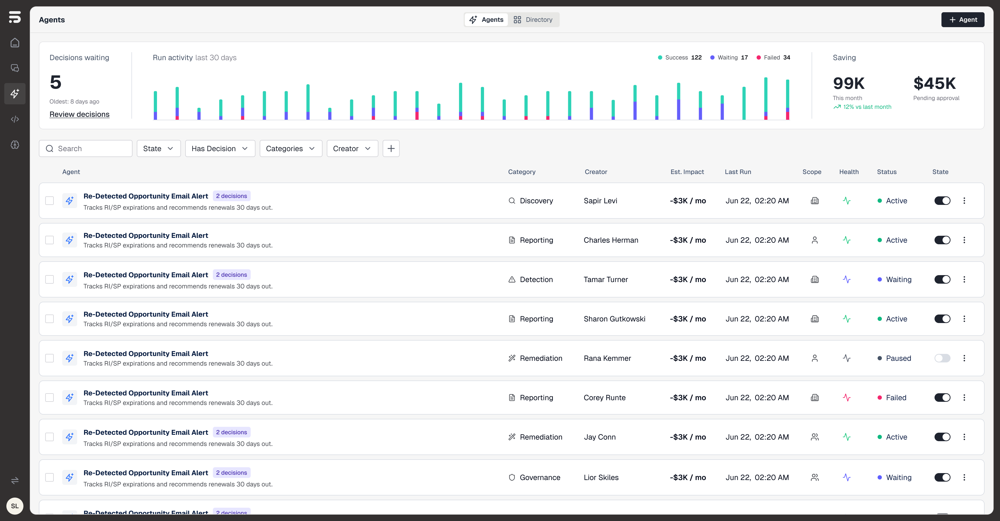
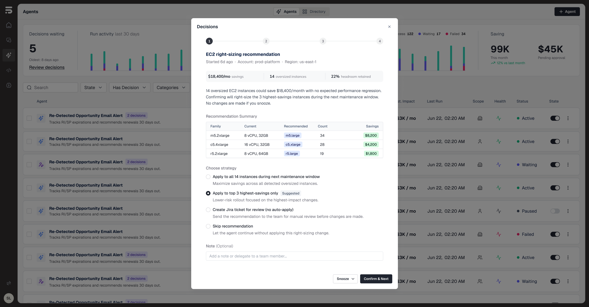
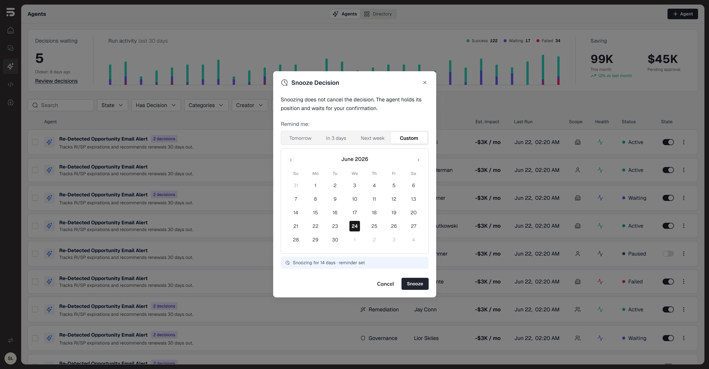
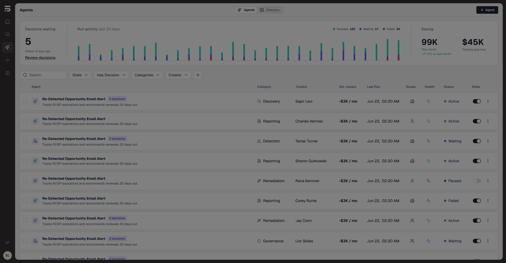

I led UX at PointFive, where I helped build the product from the ground up alongside the founder — turning complex FinOps data into clear interfaces, and shaping how people trust the AI agents that act on their cloud costs.
Before that: data security at Laminar, and enterprise AI and cyber at BeyondMinds and Sygnia.
What I really do: I build the systems underneath the screens — components, tokens and standards that keep a product coherent as it scales.
Training: BA in Visual Communication, Shenkar College.
On the side: an active artistic practice — drawing, sculpture, mixed media.
My approach · how I work
From problem to system
Step 1
Requirement definition
Problem space, opportunity, user pains & story, constraints.
Concepts & wireframes, interactive HTML prototypes. AI-supported concept exploration
Step 4
Design refinement
Choose a direction, polish visuals, prepare for handoff.
Step 5
Collaboration & iteration
Feedback loops, iterate with product & eng throughout the process.
Step 6
Design systems
Components & tokens, standards that scale. AI-generated component documentation
Step 7
Handoff & code
Engineering handoff, VQA on specific components, directly to repo.*
Step 8
Monitoring
Track behavior (FullStory), gather insight, feed back into the next cycle.
Case study 01
Managing AI Agents
A project I led as Lead Product Designer · PointFive
Overview
PointFive was going AI-native
PointFive helps organizations cut cloud-cost waste. The next step: agents that don't just surface a problem — they act on it.
For this case study, I focused on what happens after the agents start running — the oversight layer that tells you what's happening, what needs your attention, and whether you can step in.
01
Efficiency
cut waste, fast
Cut cloud-cost waste fast. If a step doesn't earn its keep, we cut it.
02
Depth
explain the why
We don't just flag a cost; we explain the why behind it, down to the resource.
03
Creativity
novel solutions
Novel solutions to messy cost problems, not just the obvious rightsizing.
04
Bias to action
agents that act
Agents that don't just surface a problem — they act on it.
05
Trust
earn the autonomy
Customers let agents touch their cloud bill only if they trust them.
The starting point
The old way: agent by agent
The moment agents could act on their own, something shifted: people started to fear them, not trust them, and quietly avoided turning them on. A pending decision lived inside each agent's own page, behind an unlabeled icon — a user running several agents never knew something was waiting.
IMG-01
Drop frame: "before" screen
The original experience — a pending decision buried behind an unlabeled icon inside a single agent's page.

🎙 SPEAKER NOTE: "Look at the original screen — if you had 50 agents running across different systems, you had to click into 50 separate pages just to see if something was waiting for approval. That's not a workflow. That's a full-time job."
The starting point · what existed
From agent management to agent oversight
This wasn't a technology problem — it was a trust gap. The product could manage agents; what was missing was the oversight layer that made autonomy feel safe to turn on.
Existing layer
Create agents
Run agents
View activity
Edit workflows
What was missing
See pending decisions across all agents at once
Understand blast radius before an action runs
Review and approve at scale — not agent by agent
Know ownership, scope and risk for every agent
🎙 SPEAKER NOTE: This is the core reframing of the case study. The product already had agent management — create, run, view activity and edit workflows. What was missing was the oversight layer: the layer that helps operators understand what agents are doing, what needs attention, what is risky, and whether they can safely step in.
המוצר כבר ידע לנהל אג׳נטים: ליצור, להריץ, לערוך ולראות פעילות. מה שהיה חסר זו שכבת הפיקוח מעל זה — לראות החלטות שמחכות לאישור בכל האג׳נטים, להבין את ה־blast radius לפני שפעולה רצה, ולאשר החלטות בקנה מידה, במקום לעבור אג׳נט־אג׳נט.
The starting point · what broke
Four things the old experience couldn't do
Pending decisions were buried — inside each agent's page, behind an unlabeled icon. Users running several agents never knew something was waiting.
No sense of blast radius — how much, and what, an agent was about to affect.
Approval didn't scale — five decisions meant five separate screens.
Someone else's agent was opaque — unclear what it was doing, or even whether it was running.
Constraints · the challenges
The challenges — and the trade-offs I made
Observable at a glance
Status, task, scope and risk across every agent.
Trade-off: surfaced pending decisions at list level — adds density, but no critical approval sits buried for days.
Trust through transparency
Surface what each agent is doing and the decisions it's waiting on.
Trade-off: described each agent goal-first, not process — less detail up front, far faster to scan a busy fleet.
Real control at scale
Triage and approve across many agents without opening each one.
Trade-off: autonomy as a spectrum (auto / approve-per-step / sandbox), not on-off — more to communicate, but what lets cautious users adopt at all.
Collaboration · partners
Who I worked with
Product Manager
The fast-sprint partner — business framing, scope, and the agent behaviors we needed to expose.
Engineering / Tech Lead
What the agents can actually report — which signals, states and actions are available to show.
CPO
The AI-native direction and the bar for what "trust" has to mean in the product.
AI as a research partner
Synthesis, 20 interactive prototypes, and pressure-testing — with my judgment as the filter.
Team: 1 Product Manager · 2 Engineering / Tech Leads · 1 CPO. Add real names if you want to personalize.
Research · market scan
I grounded it, not guessed it
Scanned 10 agentic products for oversight & governance patterns.
Read 10 studies on AI trust + signal from McKinsey · Gartner · SurveyMonkey · NN/g.
The gap: even the most advanced competitor runs oversight through Slack or ticketing — at the time, I didn't find a single product with a dedicated in-product pane to see every agent, its scope and its pending decisions
IMG-02
Drop frame: competitive scan
Market scan — 10 agentic products plus direct FinOps competitors, studied for how they handle oversight of autonomous actions.

Research · user needs
What operators actually need
See what's waiting — know instantly when an agent needs them, without opening each one.
Understand the blast radius — what an action will touch before it happens.
Act with confidence — approve, pause or undo, and know it's reversible.
Source: feature research grounded in our own product — what agents could report, where decisions got buried, how operators wanted to oversee them.
The market voice · FinOps X 2026
What the market said
From the field
"This NG agent direction is a game changer — how soon can we use it?"
What it confirmed
The whole industry is reorienting around AI — the conference renamed itself "Tokenomicon" for next year
Autonomous agents are the most-wanted direction in FinOps
The demand is there — trust is the unlock
From FinOps X 2026. Direct reactions from customers & partners to PointFive's agent direction. Framed as market validation of the direction, not measured results.
Research · synthesis
Five principles for designing trust in agents
Intent Preview
Show what will happen before it happens.
NN/g · #1 trust driver
Action Audit + Undo
Every action logged, readable, reversible.
Cuts perceived risk
Variable Autonomy
Not on/off — a spectrum: auto · approve-per-step · sandbox.
MS · +mental model
Confidence Signals
Show how sure it is, and why.
NN/g · trust ↑
Single Pane of Glass
See and act on every agent from one view.
Microsoft
Backed by: 62% of orgs piloting agents (McKinsey '25) · 40% of agent projects scrapped by '27 for trust & UX, not tech (Gartner) · 79% prefer a human when things get complex (SurveyMonkey '25).
Research · user journey
The decision path
How an operator moves from "something needs me" → review → act, plus the bulk path for many decisions at once.
IMG-03
Drop frame: user-flow diagram(s)
Mirror your DSPM journey slides — "Single decision" and "Bulk review" flows.

Design exploration
I explored the overview as interactive prototypes
Built with Claude as live HTML, not static mockups — fast to feel in a browser, not just look at.
The core question: how to surface the decisions waiting for review — keep them quiet, or pull them up as a dedicated call to action? Each concept made a different bet — building toward the one I chose.
IMG-04
Drop frame: 20-directions contact sheet
A grid with Direction 03 highlighted.

🎙 SPEAKER NOTE: "In high-density B2B tools, static mockups lie. I built these as live HTML — you could resize the browser, filter the list, click the states. That's how I discovered that Concept 01 was dangerously easy to overlook, and Concept 02 was too aggressive. The medium told me things a Figma frame couldn't."
Design exploration · concept 01
Concept 01
click to open ↗
Decisions folded quietly into the greeting — clean, but easy to miss the thing that matters most.
Concept 01: decisions folded quietly into the greeting ("5 decisions waiting for your review"). Clean, but easy to miss the thing that matters most.
Design exploration · concept 02
Concept 02
click to open ↗
A dedicated decisions banner — impossible to miss, but heavy. Pushes the whole agent list down.
Concept 02: a dedicated decisions banner naming the waiting agents, with a clear "Review decisions" action. Impossible to miss — but a heavy block pushing the agent list down.
Design exploration · concept 03 — chosen
Concept 03 → Direction 03
click to open ↗
"Review decisions" merged into the metric itself — the urgency of Concept 02, without the banner taking over the screen.
Concept 03 (selected): "Review decisions" merged into the Decisions Waiting metric itself — the urgency of Concept 02 without the extra banner. Decisions are the first thing you see, but the fleet stays in view.
🎙 SPEAKER NOTE: "Concept 03 won because it solved the tension without compromising either side. The 'Decisions Waiting' counter became the entry point — it surfaced urgency at exactly the moment the operator's eye was already there, scanning the overview strip. No extra real estate, no cognitive detour."
Final design · Direction 03
The agent-management screen
IMG-06

The agent-management screen — fleet overview, pending decisions, blast radius per action, and system health in one view. The "Decisions Waiting" metric is also the entry point to review — one click, oldest flagged first.
Final design · Direction 03
Reviewing decisions
IMG-07

Oldest flagged first — full context for every decision in one place.
Final design · Direction 03
Snooze & hand off
IMG-08

Snooze or reassign — oversight never gets stuck on one person.
Final design · design system
A system, not just screens
I built a Component Dictionary — auto-generated from the React codebase and bound to PointFive brand tokens — a full design system that keeps the agent surface coherent as the product scales, and can grow consistently from here.
IMG-05
Drop frame: component dictionary
A shot of the components / tokens.

External validation
The market wants this direction
At FinOps X 2026, customers and partners repeatedly called PointFive's NG agent direction a "game changer" and asked how soon they could use it.
The market clearly wants autonomous agents. This is market validation of the direction — not measured results on the design itself. The trust layer I designed was built to turn that demand into something people would actually switch on.
Reflection
This is a starting point, not a finish line
I focused on the moment where trust is won or lost — the moment a person decides whether to let an AI agent act. The goal wasn't to show more information. It was to create enough clarity, transparency and control for people to feel comfortable taking action.
Used AI as a research partner — clustering the scan into themes, generating 20 prototype directions — with my judgment as the filter.
Distilled 10 products + 10 studies into 5 evidence-backed trust principles that drove every decision.
Reframed an AI problem as a trust problem — focusing on transparency, control and confidence — rather than simply exposing more data.
What would tell me this worked?
Agent activation — are people actually turning agents on?
Faster decisions — does the context make approvals easier and more confident?
Fewer snoozes — are users ready to act, rather than postponing decisions?
In an AI-native world, a designer's value isn't producing screens fastest — it's being the layer of judgment.
What sets me apart
What sets me apart
I design systems, not screens
Components, tokens, patterns and decision frameworks that keep products coherent as they scale.
Complex products are my expertise
FinOps, Security and Enterprise AI. I make hard things feel inevitable.
I design for trust
From security platforms to AI agents, I help people make confident decisions in complex environments.